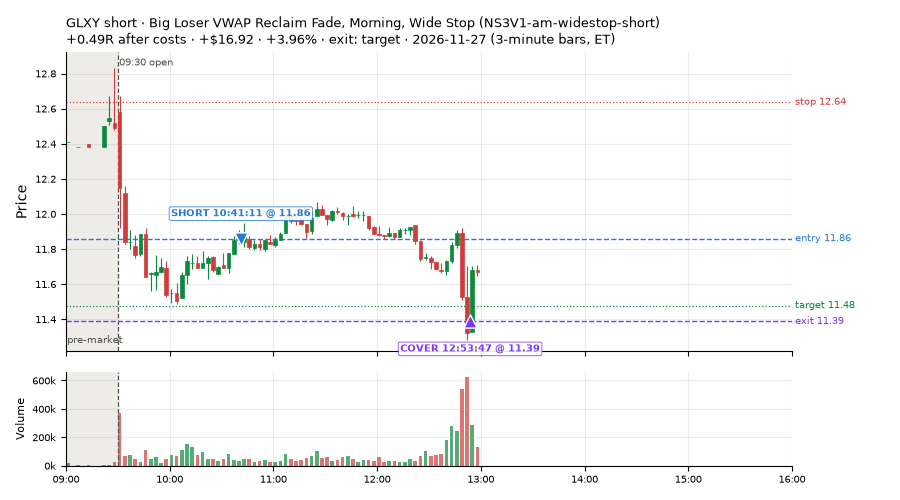
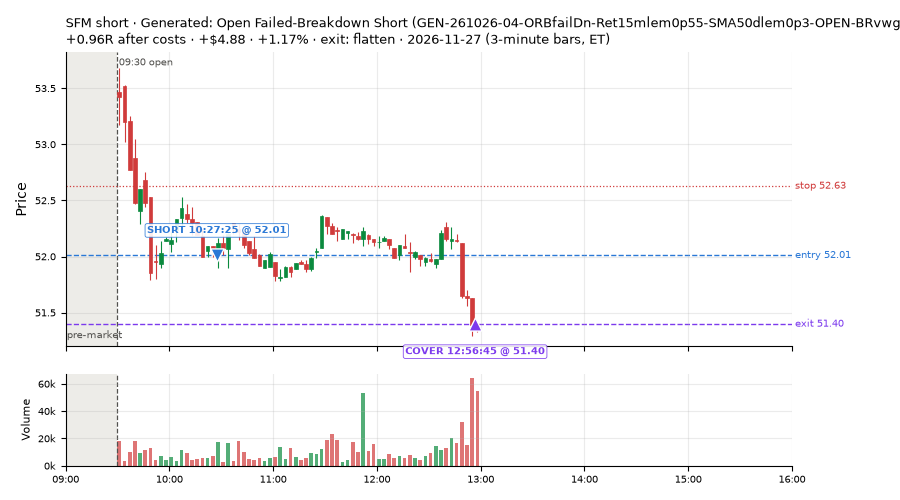
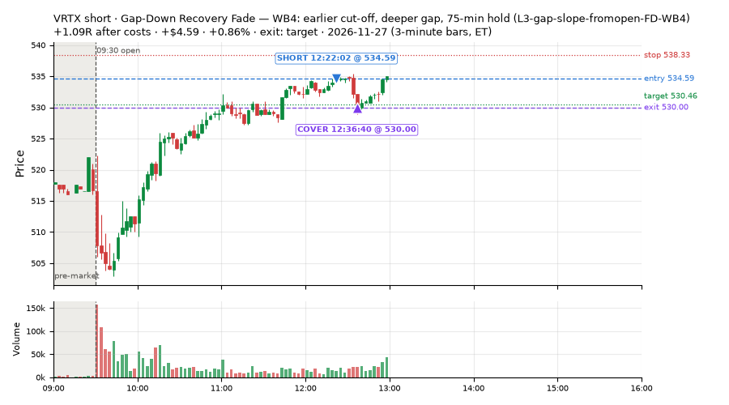
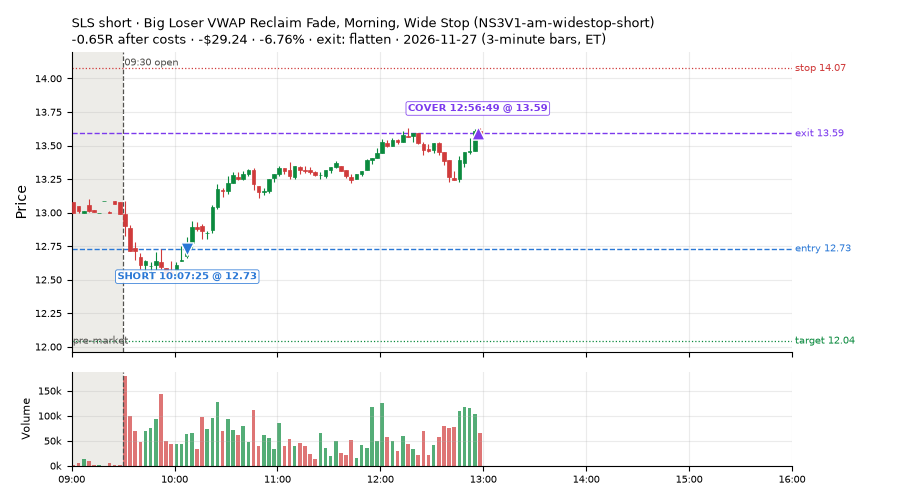
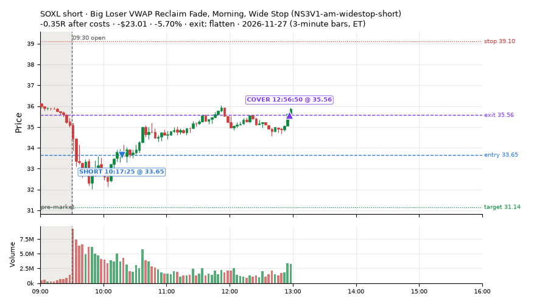
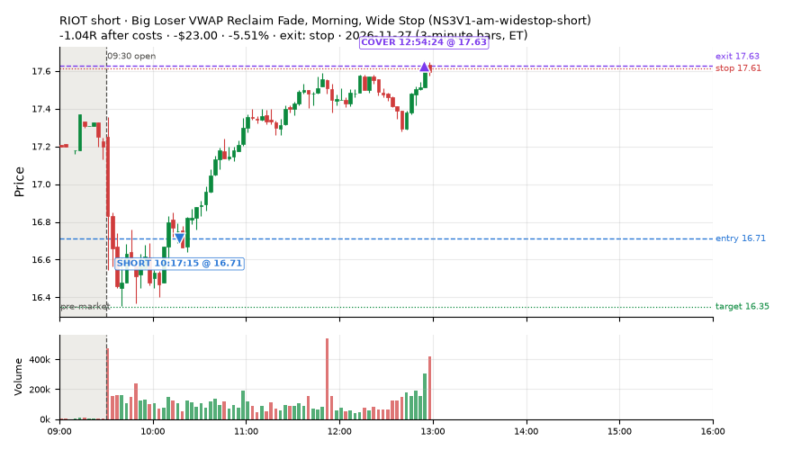
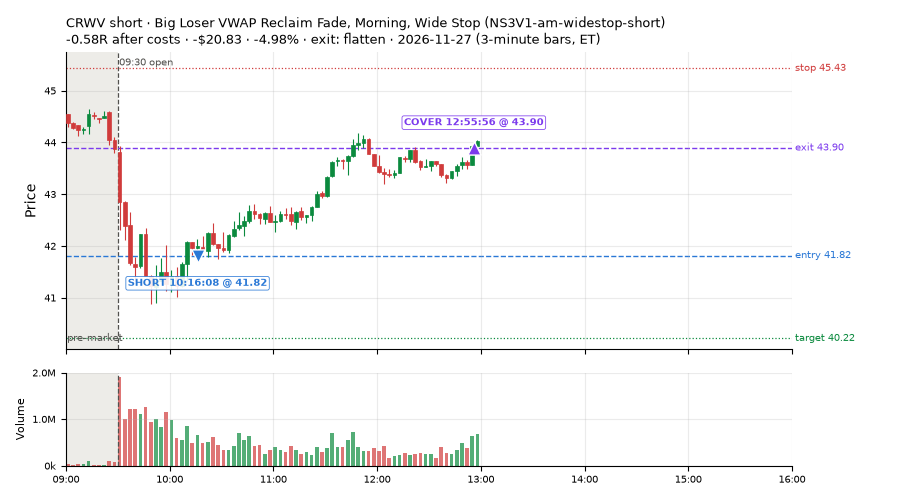
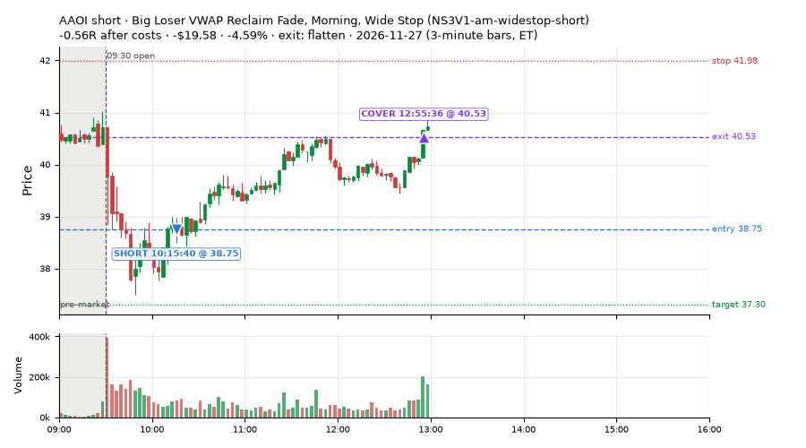

133 trades · win rate 17% · P/L $-724.01
PROBATION: no live setup has passed both locked test periods. 10 owner-directed setups added 2026-10-08 (MarcoFlow top 5 + 5 new), untested live. RW6G1 (RW6 + VWAP band guard) added 2026-10-09, probation.

| Symbol | Setup | Side | In | Out | Entry | Exit | Exit reason | % gained | P/L |
|---|---|---|---|---|---|---|---|---|---|
| GLXY | Big Loser VWAP Reclaim Fade, Morning, Wide Stop (NS3V1-am-widestop-short) | short | 10:41 | 12:53 | 11.86 | 11.39 | target | +3.96% | $16.92 |
| SFM | Generated: Open Failed-Breakdown Short (GEN-261026-04-ORBfailDn-Ret15mlem0p55-SMA50dlem0p3-OPEN-BRvwgt0p5-holdtr-short) | short | 10:27 | 12:56 | 52.01 | 51.40 | flatten | +1.17% | $4.88 |
| VRTX | Gap-Down Recovery Fade — WB4: earlier cut-off, deeper gap, 75-min hold (L3-gap-slope-fromopen-FD-WB4) | short | 12:22 | 12:36 | 534.59 | 530.00 | target | +0.86% | $4.59 |
| Symbol | Setup | Side | In | Out | Entry | Exit | Exit reason | % lost | P/L |
|---|---|---|---|---|---|---|---|---|---|
| SLS | NS3V1-am-widestop-short | short | 10:07 | 12:56 | 12.73 | 13.59 | flatten | -6.76% | $-29.24 |
| SOXL | NS3V1-am-widestop-short | short | 10:17 | 12:56 | 33.65 | 35.56 | flatten | -5.70% | $-23.01 |
| RIOT | NS3V1-am-widestop-short | short | 10:17 | 12:54 | 16.71 | 17.63 | stop | -5.51% | $-23.00 |
| CRWV | NS3V1-am-widestop-short | short | 10:16 | 12:55 | 41.82 | 43.90 | flatten | -4.98% | $-20.83 |
| AAOI | NS3V1-am-widestop-short | short | 10:15 | 12:55 | 38.75 | 40.53 | flatten | -4.59% | $-19.58 |








Signal to fill: median 1s, 90th percentile 3s (133 trades). Bars close each minute; the order follows the bar close.
Best excursion (MFE): median 0.13R; worst (MAE) median 0.44R. 80% of trades never got +0.25R in our favour; 0 reached +1R and still closed at or below 0.
| Symbol | Setup | Best R | Worst R | Closed R |
|---|---|---|---|---|
| MO | MF4-h40-open-flowsell | +0.26 | -1.02 | -1.17 |
| PANW | L3-gap-slope-fromopen-FD-WB4 | +0.24 | -1.03 | -1.06 |
| PANW | L3-gap-slope-fromopen-FD-WB4 | +0.19 | -1.06 | -1.10 |
| SE | GEN-261023-07-RSIslopege9p1-BarRngATRge0p087-VWAPcrossesge8-LUNCH-BRvwgt0p7-hold-long | +0.47 | -0.97 | -0.81 |
| MO | NM-MF3-qqqdn-gapdn-FD | +0.14 | -1.11 | -1.13 |
| Entry time | Trades | Win | Avg R | P/L |
|---|---|---|---|---|
| 09:50-10:30 | 51 | 10% | -0.33 | $-512.82 |
| 10:30-11:30 | 47 | 19% | -0.21 | $-141.75 |
| 11:30-13:00 | 35 | 26% | -0.27 | $-69.44 |
| Setup | Trades | Win | Avg R after costs | Adj R (net of SPY) | Avg R ex-market (all sessions) | P/L |
|---|---|---|---|---|---|---|
| Generated: Lunch Choppy RSI Turn Buy (GEN-261023-07-RSIslopege9p1-BarRngATRge0p087-VWAPcrossesge8-LUNCH-BRvwgt0p7-hold-long) | 18.0 | 28% | -0.29 | -0.31 | -0.19 (beta +1.15, n 119) | $-20.13 |
| Generated: Open Failed-Breakdown Short (GEN-261026-04-ORBfailDn-Ret15mlem0p55-SMA50dlem0p3-OPEN-BRvwgt0p5-holdtr-short) | 1.0 | 100% | +0.96 | +1.38 | -0.11 (beta -0.20, n 17) | $4.88 |
| Generated: Lunch Quiet Breakout Buy (SPY up) (GEN-261029-04-Ret15mge0p54-RVolDayle0p59-VWAPcrossesle1-LUNCH-SPYgt0p25-hold-long) | 3.0 | 0% | -0.40 | -0.40 | +0.05 (beta +0.21, n 8) | $-8.09 |
| Gap-Down Recovery Fade — WB4: earlier cut-off, deeper gap, 75-min hold (L3-gap-slope-fromopen-FD-WB4) | 8.0 | 25% | -0.40 | -0.41 | -0.76 (beta -0.24, n 179) | $-40.44 |
| Early Sellers, Strong Heat (MF4-h40-open-flowsell) owner-directed; holdouts once: Sep-Oct -0.117R n147, Apr-Jun -0.017R n735 | 2.0 | 50% | -0.36 | -0.34 | -0.12 (beta -0.50, n 82) | $-0.60 |
| Gap-Down Capitulation Buy (near-miss) (NM-AR-AM-gapdown-capitulation-long) | 3.0 | 0% | -0.50 | -0.67 | -0.14 (beta +0.74, n 117) | $-10.70 |
| Early Sellers into a Pop (index down, no gap up) (near-miss) (NM-MF3-qqqdn-gapdn-FD) | 2.0 | 0% | -0.64 | -0.38 | -0.13 (beta -0.56, n 86) | $-2.72 |
| Big Loser VWAP Reclaim Fade, Morning, Wide Stop (NS3V1-am-widestop-short) | 85.0 | 11% | -0.28 | -0.20 | -0.07 (beta -0.38, n 258) | $-646.24 |
| Remedy-Q: Gap-Down Pop Fade, Heavy Selling, no entries after 12:30 (RW3-gapdn-rsi5pop-flowsell-short-FD-RQa-1230) | 3.0 | 33% | -0.13 | +0.08 | -0.25 (beta -0.63, n 22) | $-0.25 |
| RSI Collapse Buy, Down-Tape Guard (ULT-13-st7-sharp-long) | 8.0 | 50% | +0.01 | +0.00 | -0.07 (beta +0.45, n 22) | $0.28 |
Market direction (SPY, beta 1) accounted for $-178.63 of today's $-724.01; the rest ($-545.38) came from the setups themselves. Avg R net of SPY: -0.22 (incl. a hedge leg's cost; report only).
21 setups live today. Today: 240 signals, 133 taken, 6 lost because another setup held the symbol (2%). Since 2026-10-12 (34 sessions): 15038 signals, 7191 taken, 855 lost to other setups (6%). Peak open positions today 118 of 800 slots. Earnings blackout removed 138 symbols before scanning.
Simulated playing time (not live): 7823 what-if trades of signals not taken, avg -0.16R, 52% winners; of them 855 lost to another setup (avg -0.18R).
Silent: GEN-261028-01-MACDhge0p12-Since950ATRlem0p25-LATE-SPYgt0p5-holdtr-long, LD4-st4-breadthup-t1s05-long, LD8-spy-dip030-breadthturn-spxl-holdtr-long, GEN-261027-10-FlowShiftlem1p2-MACDhge0p079-SMA20dge0p59-LUNCH-BRopgt0p65-holdtr-long, LD1-ns1-breadthup-t05s1-long, CWT04-backside-lh-a25-short, CWT04-backside-vwaptest-a25-short · Crowded out: NS3-failed-vwap-reclaim-short-FD · Starved: exhaustion_short-FD, MF5-flowsell-vwapup-rsi5hi, NS5-sma50-flush-oversold-long-FD, RW4-ns3-adv150-short-FD, MF2-open-rsimidhi-flowsell
| Prio | Setup | Today sig / taken | Sessions | Signals / taken / trades | Taken/day | Expected/day | Lost to other setups | Lost to (setup n) | Top skip reasons | SIMULATED: not-taken n / avg R / win | Verdict |
|---|---|---|---|---|---|---|---|---|---|---|---|
| 1 | Remedy-Q: Gap-Down Pop Fade, Heavy Selling, no entries after 12:30 RW3-gapdn-rsi5pop-flowsell-short-FD-RQa-1230 | 8 / 3 | 4 | 42 / 22 / 22 | 5.50 | – | 1 | NM-AR-AM-gapdown-capitulation-long 1 | spread / quote / size 12, other 5, not shortable / shorts off 2 | 20 / -0.41R / 35% | ok 27.5 entries/week |
| 2 | Gap-Down Recovery Fade — WB4: earlier cut-off, deeper gap, 75-min hold L3-gap-slope-fromopen-FD-WB4 | 36 / 8 | 8 | 1230 / 179 / 179 | 22.38 | – | 27 | L3-gap-slope-fromopen-FD-WB4 23, GEN-261023-07-RSIslopege9p1-BarRngATRge0p087-VWAPcrossesge8-LUNCH-BRvwgt0p7-hold-long 4, RW6G1-ns2-up3-vwap2sd-short-FD-WB3 2 | other 510, not shortable / shorts off 276, spread / quote / size 238 | 1049 / -0.78R / 14% | ok 111.9 entries/week |
| 3 | Early Sellers, Mid-High RSI (all day) — WB3: skip rising 20-SMA / gap-ups > 2% + RSI 55-62 + heat -40..-30 + ADV $150M MF2-open-rsimidhi-flowsell-FD-WB3 | 0 / 0 | 8 | 89 / 40 / 40 | 5.00 | – | 2 | CWT14-failbrk-pdl-p05-R2A-long 2, CWT14-failbrk-pdl-p10-long 2 | other 22, spread / quote / size 20, symbol held by another setup 2 | 49 / -0.26R / 37% | ok 25.0 entries/week |
| 4 | Big Gainer Fade, VWAP Band Guard (all day) — WB3: from 11:00, stretched reclaim, liquid, no gap-up runners RW6G1-ns2-up3-vwap2sd-short-FD-WB3 | 0 / 0 | 8 | 21 / 9 / 9 | 1.12 | – | 0 | – | not shortable / shorts off 10, spread / quote / size 2 | 12 / +0.27R / 67% | slow 5.6 entries/week; ~11 weeks to 60 trades |
| 5 | Generated: Late Choppy Dip Buy (SPY down) GEN-261023-08-RSIslopelem5p5-VWAPcrossesge8-SMA50dlem1p7-LATE-SPYltm0p5-t1s1-long | 0 / 0 | 9 | 32 / 17 / 17 | 1.89 | – | 0 | – | spread / quote / size 7, other 6, price through stop/target 2 | 15 / -0.28R / 20% | slow 9.4 entries/week; ~6 weeks to 60 trades |
| 6 | Generated: PM Upper-Band Fade (weak mkt) GEN-261026-07-Flow3ge0p56-BBpctge0p98-ADX7le34-PM-BRvwlt0p3-holdtr-short | 0 / 0 | 9 | 297 / 163 / 163 | 18.11 | – | 8 | CWT14-failbrk-pdl-p05-R2A-long 4, CWT14-failbrk-pdl-p10-long 3, NM-AR-AM-gapdown-capitulation-long 1 | other 47, spread / quote / size 29, per-setup cap 26 | 134 / +0.23R / 62% | ok 90.6 entries/week |
| 7 | Generated: Open Failed-Breakdown Short GEN-261026-04-ORBfailDn-Ret15mlem0p55-SMA50dlem0p3-OPEN-BRvwgt0p5-holdtr-short | 1 / 1 | 9 | 32 / 17 / 17 | 1.89 | – | 0 | – | spread / quote / size 11, not shortable / shorts off 3, other 1 | 15 / -0.77R / 7% | slow 9.4 entries/week; ~6 weeks to 60 trades |
| 8 | Generated: Open Tight-Range Sell-Off Buy GEN-261020-08-FlowShiftlem0p41-Compress6le0p077-OPEN-QQQup-t05s05-long | 0 / 0 | 9 | 2 / 2 / 2 | 0.22 | – | 0 | – | – | 0 / – | slow 1.1 entries/week; ~54 weeks to 60 trades |
| 9 | Generated: Lunch Quiet Breakout Buy (SPY up) GEN-261029-04-Ret15mge0p54-RVolDayle0p59-VWAPcrossesle1-LUNCH-SPYgt0p25-hold-long | 8 / 3 | 9 | 23 / 8 / 8 | 0.89 | – | 2 | NS3V1-am-widestop-short 2 | spread / quote / size 13, symbol held by another setup 2 | 15 / +0.22R / 40% | slow 4.4 entries/week; ~14 weeks to 60 trades |
| 10 | Generated: Morning Upper-Wick Short (falling) GEN-261026-01-UpWickge0p59-Since950ATRlem0p61-AM-BRopgt0p5-holdtr-short | 1 / 0 | 9 | 9 / 3 / 3 | 0.33 | – | 1 | NM-AR-AM-gapdown-capitulation-long 1 | not shortable / shorts off 2, spread / quote / size 2, symbol held by another setup 1 | 6 / -0.63R / 33% | slow 1.7 entries/week; ~36 weeks to 60 trades |
| 11 | Generated: Lunch Choppy RSI Turn Buy GEN-261023-07-RSIslopege9p1-BarRngATRge0p087-VWAPcrossesge8-LUNCH-BRvwgt0p7-hold-long | 30 / 18 | 9 | 249 / 119 / 119 | 13.22 | – | 7 | NS3V1-am-widestop-short 2, GEN-261028-07-Z12ge1p6-Eff6le0p034-MID-SPYltm0p25-hold-short 2, exhaustion_short-FD 1 | other 92, spread / quote / size 31, symbol held by another setup 7 | 130 / +0.91R / 60% | ok 66.1 entries/week |
| 12 | Early Sellers into a Pop (index down, no gap up) (near-miss) NM-MF3-qqqdn-gapdn-FD | 3 / 2 | 27 | 166 / 86 / 86 | 3.19 | 4.90 | 7 | NM-AR-AM-gapdown-capitulation-long 7, CWT13-vwapstretch-z05-long 1 | spread / quote / size 40, not shortable / shorts off 18, other 15 | 80 / +0.11R / 54% | ok 15.9 entries/week |
| 13 | Early Sellers, Strong Heat MF4-h40-open-flowsell | 9 / 2 | 12 | 208 / 82 / 82 | 6.83 | 7.24 | 2 | CWT14-failbrk-pdl-p05-R2A-long 1, NM-AR-AM-gapdown-capitulation-long 1 | spread / quote / size 91, other 18, not shortable / shorts off 15 | 126 / +0.01R / 68% | ok 34.2 entries/week |
| 14 | Big Loser VWAP Reclaim Fade, Morning, Wide Stop NS3V1-am-widestop-short | 130 / 85 | 25 | 455 / 258 / 258 | 10.32 | 5.30 | 7 | NS3V1-am-widestop-short 7, NM-RWR3-ns3-qqqup-early-short 1, NM-RWN3-ns3-spyup-early-short 1 | spread / quote / size 132, not shortable / shorts off 54, symbol held by another setup 7 | 197 / +0.01R / 51% | ok 51.6 entries/week |
| 15 | Gap-Down Capitulation Buy (near-miss) NM-AR-AM-gapdown-capitulation-long | 3 / 3 | 29 | 189 / 117 / 117 | 4.03 | – | 7 | MF4-h40-open-flowsell 6, CWT14-failbrk-pdl-p05-R2A-short 1 | spread / quote / size 58, symbol held by another setup 7, other 7 | 72 / +0.08R / 54% | ok 20.2 entries/week |
| 16 | RSI Collapse Buy, Down-Tape Guard ULT-13-st7-sharp-long | 11 / 8 | 5 | 35 / 22 / 22 | 4.40 | – | 1 | GEN-261026-07-Flow3ge0p56-BBpctge0p98-ADX7le34-PM-BRvwlt0p3-holdtr-short 1 | spread / quote / size 12, symbol held by another setup 1 | 13 / -0.18R / 46% | ok 22.0 entries/week |
| 17 | Late-Day ETF Pop Fade (WB4 mirror) ULT-HV1-etf-late-pop-fade-short-X | 0 / 0 | 5 | 20 / 10 / 10 | 2.00 | – | 1 | GEN-261019-03-Ret15mATRlem0p12-FromOpenATRlem0p34-SMA20slopege0p29-PM-BRoplt0p5-t05s1-long 1 | not shortable / shorts off 9, symbol held by another setup 1 | 10 / -0.26R / 60% | slow 10.0 entries/week; ~6 weeks to 60 trades |
| 18 | Afternoon Volatile Dip Buy (broad) ULT-07-pm-volatile-dip-long | 0 / 0 | 5 | 10 / 8 / 8 | 1.60 | – | 0 | – | spread / quote / size 2 | 2 / +0.20R / 50% | slow 8.0 entries/week; ~8 weeks to 60 trades |
| 19 | Generated: Late Down-Stock Turn Buy (SPY up) GEN-261028-01-MACDhge0p12-Since950ATRlem0p25-LATE-SPYgt0p5-holdtr-long | 0 / 0 | 5 | 0 / 0 / 0 | 0.00 | – | 0 | – | – | 0 / – | silent no signals in 5 session(s); no expected rate on file |
| 20 | Generated: Late Gap-Down Oversold Buy GEN-261028-04-ORBfailUp-RSI14le22-Gaplem1p2-LATE-BRvwgt0p5-holdtr-long | 0 / 0 | 1 | 0 / 0 / 0 | 0.00 | – | 0 | – | – | 0 / – | quiet - wait no signals in 1 session(s); too early to tell |
| 21 | Backside VWAP-Test Short CWT04-backside-vwaptest-a15-short | 0 / 0 | 19 | 17 / 8 / 8 | 0.42 | – | 1 | CWT14-failbrk-pdl-p05-lowvol-long 1 | spread / quote / size 4, not shortable / shorts off 2, symbol held by another setup 1 | 9 / +0.40R / 44% | slow 2.1 entries/week; ~28 weeks to 60 trades |
Every trade is attached as a CSV you can open and edit in Excel or Google Sheets. Live page: https://misiti15.github.io/MCF/live/